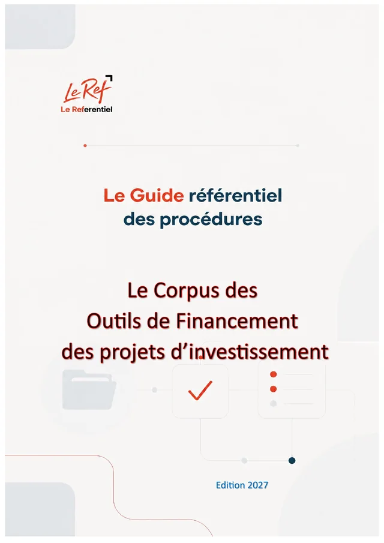

Maroc · FIN · Édition 2026 · à jour au 09/10/2026
Guide des procédures de financement de l'investissement
Le Corpus des Outils de Financement des projets d'investissement
Mécanismes, conditions, montage et constitution des dossiers de financement de l'investissement, de la très petite entreprise au projet stratégique : Charte de l'investissement, primes, financements bancaires et publics, dossier et recours.
- 210paragraphes
- 44chapitres
- 9parties
- 45fichiers JSON
- 159pages (PDF)
Disponible prochainement (option d'achat)
Pages préliminaires et annexes
Contenu
210 paragraphes · 44 chapitres · un fichier JSON par chapitrePartie 1Comprendre le système de financement et choisir son mécanisme
15 paragraphes
Partie 2La Charte de l'investissement et les avantages publics
43 paragraphes
2.1 Le cadre : Charte de l'investissement, CRI et gouvernance
- 2-001La loi-cadre 03-22 et ses neuf objectifs
- 2-002Les quatre dispositifs de soutien
- 2-003La gouvernance
- 2-004La réforme des CRI par la loi 22-24
- 2-005Les centres régionaux d'investissement : coordonnées
- 2-006Le parcours de l'investisseur sur la plateforme CRI
- 2-007Les sept chantiers du climat des affaires
2.2 Le dispositif principal de soutien à l'investissement
- 2-010Fiche signalétique
- 2-011Les définitions qui conditionnent le calcul
- 2-012Les primes
- 2-013Le critère « métiers d'avenir et montée en gamme »
- 2-014Le critère « projet durable »
- 2-015Le critère « intégration locale »
- 2-016La prime territoriale
- 2-017La prime sectorielle
- 2-018Méthode de calcul pas à pas
- 2-019La procédure
- 2-020Les pièces à préparer
- 2-021Optimiser le cumul des primes
2.4 Le dispositif de soutien aux TPME
- 2-040Fiche signalétique
- 2-041Les définitions du décret
- 2-042Les conditions relatives à l'entreprise
- 2-043Les conditions relatives au projet
- 2-044Le calcul du montant primable
- 2-045Les primes et leur barème
- 2-046L'ordre de vérification
- 2-047Les branches éligibles et les activités prioritaires
- 2-048Les provinces et préfectures par catégorie
- 2-049Les pièces du dossier (arrêté 3.53.25)
- 2-050La procédure pas à pas
- 2-051Le versement des primes et la restitution
- 2-052Ce que les textes ne disent pas
2.5 Avantages fiscaux et douaniers liés à l'investissement
- 2-060Pourquoi les intégrer au plan de financement
- 2-061L'impôt sur les sociétés en 2026
- 2-062L'exonération de TVA sur les biens d'investissement
- 2-063Les droits de douane
- 2-064La réduction d'IS liée à l'introduction en bourse
- 2-065Les droits d'enregistrement : mesures 2026
- 2-066Fiscalité des primes reçues
Partie 3Garanties, cofinancements et avances (Tamwilcom, Finéa)
21 paragraphes
Partie 4Crédit bancaire, crédit-bail, finance participative, microfinance
15 paragraphes
Partie 5Fonds propres : capital-investissement, bourse, financement collaboratif
12 paragraphes
Partie 6Programmes par public et par secteur
38 paragraphes
6.3 Tourisme
Partie 7Monter, déposer et défendre le dossier
43 paragraphes
7.5 Les recours
7.7 Cas pratiques chiffrés
- 7-060Cas pratiques chiffrés — présentation
- 7-061Cas A – Création d'un atelier de menuiserie (très petite entreprise, Intelaka)
- 7-062Cas B – PME agroalimentaire, dispositif TPME (Béni Mellal)
- 7-063Cas C – Entreprise de taille intermédiaire, dispositif principal (Fès)
- 7-064Cas D – Centrale solaire (Ouarzazate)
- 7-065Cas E – Startup technologique
- 7-066Cas F – Projet d'un Marocain du monde
- 7-067Cas G – Entreprise dirigée par une femme
- 7-068Cas H – Rénovation d'un hôtel classé
- 7-069Cas I – Exploitation agricole
- 7-070Cas J – Société de services numériques à Casablanca